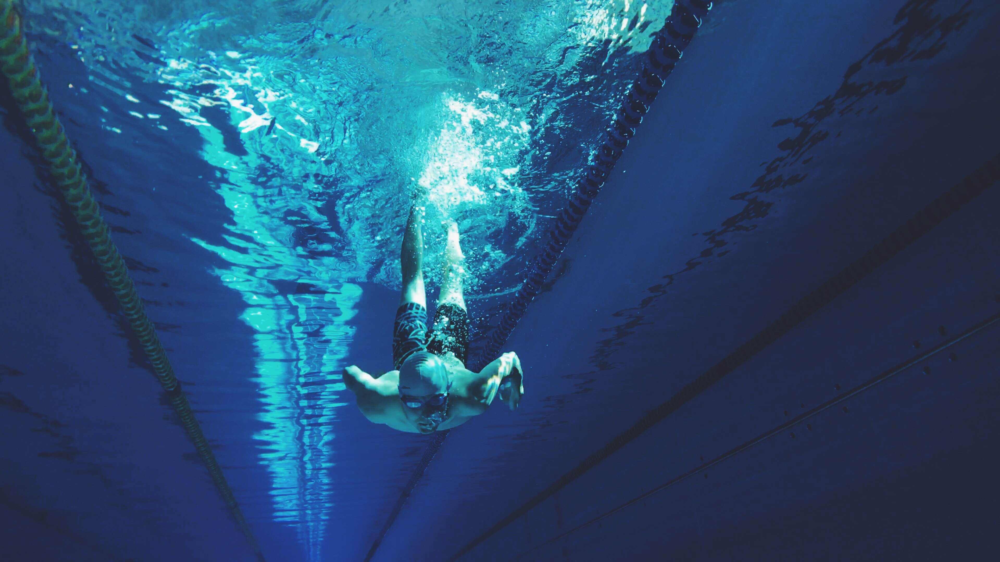

Salah satu cabang olahraga populer di Indonesia adalah renang. Bagi orang yang tinggal dipedesaan olahraga ini dapat dilakukan di sungai, danau, atau pinggiran laut. Sedangkan di perkotaan olahraga ini biasa dilakukan di kolam renang yang dibuat khusus.
Renang yang biasa dilakukan sebagai hobi, olahraga rutin ataupun refreshing semata, dalam dunia profesional sering dipertandingkan dalam berbagai kejuaraan resmi.
Nomor-nomor gaya renang yang diperlombakan meliputi renang gaya bebas, kupu-kupu, dada dan renang gaya punggung meliputi jarak 50 meter -1500 meter.
Pengertian renang adalah aktivitas menggerakan, mengapungkan atau mengangkat seluruh bagian tubuh ke atas permukaan air dengan menggerakan kaki ataupun lengan.
Dalam wiktionary bahasa Inggris, definisi renang adalah“The activity of moving oneself through water using one’s arms and legs while buoyed up by the water, carried out by humans for amusement, exercise, sport or entertainment”.
atau jika diartikan kedalam bahasa Indonesia renang artinya adalah aktivitas menggerakan diri melalui air menggunakan lengan dan kaki sambil ditopang, renang dilakukan manusia untuk kesenangan, latihan, olahraga atau hiburan.
Menurut Ama Abdoelah (1981),
Pengertian renang adalah suatu jenis olahraga yang dilakukan di air, baik di air tawar maupun air asin atau laut.Menurut Budiningsih (2010),
Renang adalah salah satu olahraga air yang dilakukan dengan menggerakkan badan di air, seperti menggunakan kaki dan tangan sehingga tubuh terapung di permukaan air.
Renang telah dikenal sejak berabad-abad yang lalu, bahkan sebelum manusia mengenal tulisan. Temuan lukisan tentang perenang pada sebuah dinding batu di dalam gua adalah bukti adanya aktivitas berenang di masa lalu.
Sebagai sebuah cabang olahraga, renang mulai dikenal pada abad ke-19 di London, Inggris. Pada tahun 1837, hanya ada enam buah kolam renang di kota. Sejak itu, renang semakin populer. Bahkan, pada tahun 1869, muncullah beberapa asosiasi olahraga renang.
Renang kemudian semakin dikenal dunia sehingga pada tahun 1896, renang resmi menjadi salah satu cabang olahraga yang dipertandingkan di Olimpiade modern yang diselenggarakan di Athena, Yunani.
Di Indonesia, kepopuleran renang diawali di Kota Bandung, yaitu dengan dibangunnya kolam renang Cihampelas pada tahun 1904. Setelah itu, kolam renang pun dibangun di beberapa kota besar di Indonesia, seperti Jakarta dan Surabaya.
Perkembangan olahraga renang di Indonesia selanjutnya ditandai dengan lahirnya berbagai perkumpulan renang, seperti Bandungsche Zwembond atau Perserikatan Renang Bandung pada tahun 1917. Organisasi ini membawahi tujuh perkumpulan renang.
Bandungsche Zwembond rupanya menginspirasi terbentuknya perkumpulan serupa di tingkat yang lebih tinggi. Di Jawa Barat, ada West Java Zwembond yang lahir pada tahun 1918, sementara di Jawa Timur didirikan Oost Java Zwembond pada tahun 1927.
Berdirinya perkumpulan renang tersebut membuahkan hasil. Di ajang Far Eastern Games (Olimpiade Timur Jauh) yang diselenggarakan pada tahun 1934 di Manila, Filipina, dua orang peloncat indah dari Hindia Belanda sukses mengukir prestasi sebagai juara pertama dan kedua.